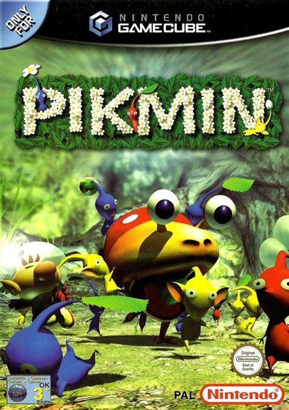
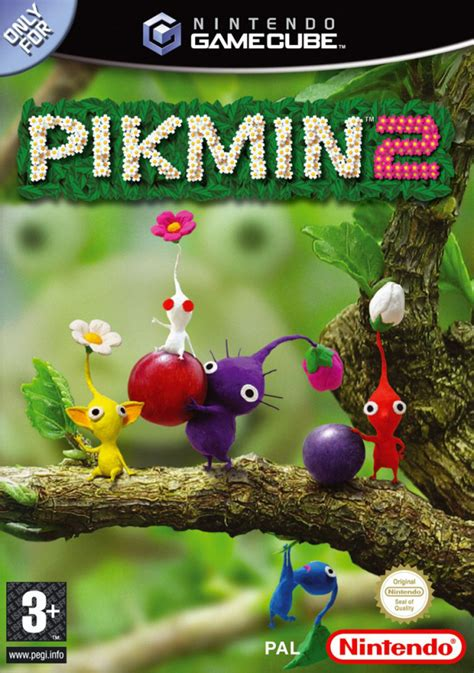
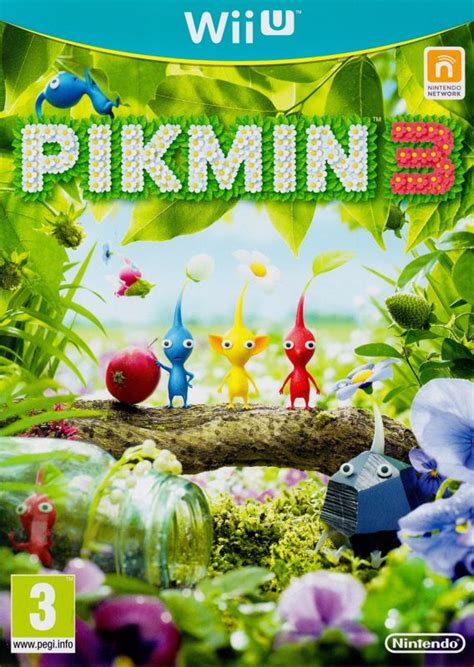
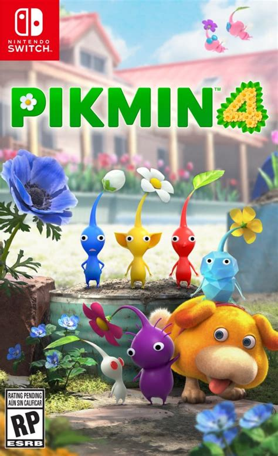

Pikmin FanPage
Hello! And welcome to my Pikmin fanpage a page dedicated to all things Pikmin from a quiz to test your Pikmin knowledge. To a list of some Louie's favorite dishes on PNF-404, this site truly has it all. This page contains information on conception of the Pikmin franchise and the creation of the Pikmin games.
Pikmin 1

Pikmin is an RTS designed to be more laid back compared to its counterparts at the time. It Was originally developed for the GameCube with the intention of showing its new hardware capabilities. Specifically, its ability to display 100 creatures each with their own independant AI (i.e.the Pikmin). Shigeru Miyamoto, creator of other popular franchises like Donkey Kong and The Legend of Zelda, was the one who pitched the idea to Nintendo and lead the creation of the game. It was realeased on October 26th, 2001, to great success selling 1.60 million units. The plot of Pikmin 1 is straight forward, Captain Olimar crash lands on a planet and has 30 days to gather his ship parts with the help of the pikmin, otherwise he dies. Which introduces a tight 30 day timelimit to the player.
Pikmin 2

Pikmin 2, released April 29th 2004 for the GameCube, was the sequel to Pikmin 1. While it stayed true to some of the ideas introduced in the first game it also changed them, and introduced new ideas to the series. One example is the caves as well as not including the strict time limits of Pikmin 1, allowing the player to have as much time as they like to complete the objective. It also adds 2 new characters louie, a franchise mainstay and later in the game it indroduces the president of Hocatate Frate. This adds a new layer of complexity and multitasking to the game allowing you to divide ansd conquer while searching for treasures to pay off your debt of the thousand pokos. Which was caused by louie eating all of the golden pikpik carrots, forshadowing his ravenous apetite.
Pikmin 3

Pikmin 3 was the long awaited sequel to Pikmin 2, it realeased in Japan on July 13, 2013. In Europe and Australia it was realeased on July 27, 2013. Finally it released in North America on August 4th 2013, realeasing 9 years after Pikmin 2. It returned to the series roots of Pikmin 1 by introducing a new timelimit whith the juice mechanic, so when you run out of juice, you die. This game regulates Olimar to the role of a side charater and replaces him with 3 new captains, Brittney, Alph and Charlie allowing for even more multitasking, than 2, in which you only had 2 captains, Olimar and Louie. Pikmin 3 removed the caves introduced in two and indroduced new areas for the player to explore. It also added new bosses for the player to encounter having, many more than the first two games.Pikmin 4

Pikmin 4 realeased on the Nintendo Switch on July 21st 2023 making it now the longest wait for fans between Pikmin entries. Pikmin realeased to great acclaim from both critics, selling a total of 2.5 million copies making it the best selling game of the Pikmin franchise so far. Pikmin 4 is includes an omage to the cave system from Pikmin 2 which the 3rd entry neglected to include but, also includes elements from all the games including all of the enemies from Pikmin 1, and adding the extra challenges from Pikmin 3. While also introducing new ideas to the frachise like Oatchi, the rescue pup who helps you on your mission to find Olimar. This is first game to allow the player to make their own charater.